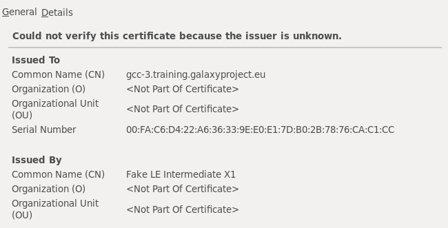
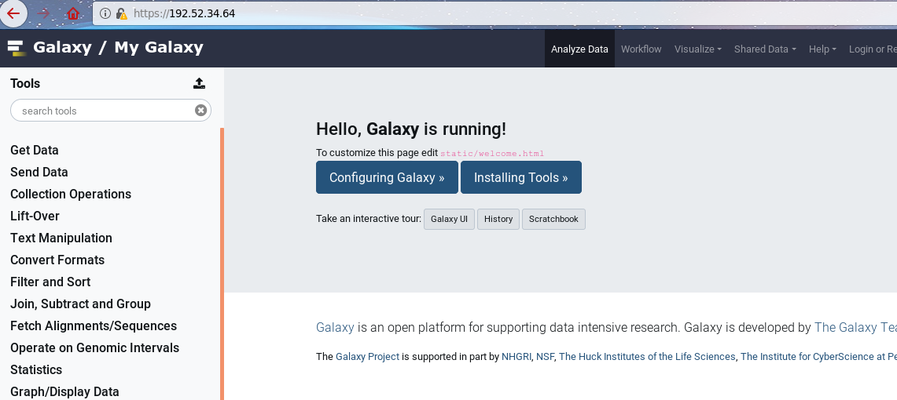

This tutorial assumes you have some familiarity with Ansible and are comfortable with writing and running playbooks. Here we’ll see how to install a Galaxy server using an Ansible playbook. The Galaxy Project has decided on Ansible for all of its deployment recipes. For our project, Ansible is even more fitting due to its name:
An ansible is a category of fictional device or technology capable of instantaneous or faster-than-light communication. It can send and receive messages to and from a corresponding device over any distance or obstacle whatsoever with no delay, even between star systems (Source: Wikipedia)
We want to give you a comprehensive understanding of how the Galaxy installation occurs, but we want to avoid you having to write a “custom” Galaxy installation playbook which you would eventually throw away, in order to use the official playbooks. Given these goals, we will go through the playbook in depth first, and then move to a hands-on portion later. If you are not interested in the inner workings, you can skip to that section now.
These Ansible roles and training materials were last tested on Centos 7 and Ubuntu 18.04, but will probably work on other RHEL and Debian variants.
The roles that are used in these training are currently used by usegalaxy.*, and other, servers in maintaining their infrastructure. (US, EU, both are running CentOS 7)
If you have an issue running these trainings on your OS flavour, please report the issue in the training material and we can see if it is possible to solve.
The official role is extremely configurable, everything that you want to change is exposed as a variable, and then tasks will change behaviour based on that. The role documentation is the most up-to-date source of documentation for the variables. You should take a minute and read over the variables listed there.
The important variables for this tutorial are:
galaxy_root
galaxy_commit_id
galaxy_config
galaxy_server_dir (automatically set based on galaxy_root)
These are largely self explanatory: a directory for all of Galaxy’s code and configuration, which commit should be installed, and the Galaxy configuration. We will not explain Galaxy configuration variables in detail as they are covered sufficiently in the galaxy.yml sample file or the online documentation.
The official recommendation is that you should have a variables file such as a group_vars/galaxyservers.yml for storing all of the Galaxy configuration.
The actions each set of tasks performs are described below.
Cloning Galaxy
The clone task is the one which is primarily interesting to us, it downloads Galaxy, using git, at a specific commit (or more generally, any git reference).
Ansible tries to update Galaxy, cloning it if it is missing, or otherwise attempting to update to the correct commit (or latest commit of the given branch).
Any change is reported.
The virtualenv is set up:
An empty virtualenv is created.
Pip is updated within the virtualenv.
Any .pyc files are removed, as this can occasionally result in Python loading the cached code, even if the corresponding .py file is no longer present at the checked-out commit. For safety, all of these are removed.
With that Galaxy is cloned to disk and is ready to be configured by the next task.
The directories for Galaxy configuration data and for the shed tools are created
Any config files are copied over
Any templates are copied over
The galaxy.yml (or .ini) is deployed
The setup for deploying extra Galaxy configuration templates and files is a little bit non-standard by Ansible best practices. Here you are expected to provide your own templates and static config files, and then describe them as a list of files and where they should be deployed to.
Using the UseGalaxy.eu configuration as an example, we have something like:
So the references in galaxy_config_files to galaxy_config are done to ensure that the setting for e.g. “location of the datatypes config file” is the same between where we have configured Galaxy to looking for it, and where the file has been deployed, without requiring us to make variables changes in numerous places.
tip Define once, reference many times
Using practices like those shown above helps to avoid problems caused when paths are defined differently in multiple places. The datatypes config file will be copied to the same path as Galaxy is configured to find it in, because that path is only defined in one place. Everything else is a reference to the original definition! If you ever need to update that definition, everything else will be updated accordingly.
Dependencies
Now that Galaxy is available on disk, Ansible is ready to start processing dependencies of Galaxy.
The virtualenv is updated with data from the galaxy_requirements_file, by default pointing to the requirements file in the codebase: {{ galaxy_server_dir }}/lib/galaxy/dependencies/pinned-requirements.txt.
This task creates a directory and initializes “mutable” (written/managed by Galaxy itself) configuration files. It also deploys any hand-managed mutable config files, but it is unlikely that you want to manage these directly, as Galaxy does a sufficient job. Any changes you make to Galaxy, for example installing some tools, would result in the tools being “forgotten about”, if you re-ran the playbook and overwrote the shed_tool_conf.xml mutable config file with a hand-managed one.
Managing the Database
The database management tasks are extremely convenient; any time you run the playbook to update Galaxy, this will automatically run the database schema migration as needed.
Galaxy first obtains the current DB version and the maximum possible DB version based on the codebase.
If needed, the database is created.
Both numbers are reported for the runner of the playbook.
If the numbers are different, then Ansible runs the command to upgrade the database to the latest version.
As an administrator who often forgot to run the upgrade, and would only notice it once Galaxy crashed during startup, having this process completely automated is extremely nice.
Handlers
A number of the tasks that are executed will trigger a restart of Galaxy. Currently there is no auto-magic implementation of this, and you will have to do something that fits for your setup. The role provides a way to reference your own handler, which we will do in this exercise. As Galaxy continues to standardise on setup, something will be implemented directly in the role to automatically restart the correct processes.
Defaults
As with other roles, numerous default values are provided, but these are useful mostly as reference, and not to go through individually.
Summary
Installation of Galaxy with the playbook follows generally the steps you would expect:
Galaxy is cloned (or updated)
A virtualenv is created if it doesn’t exist
Configuration files are installed
Any missing dependencies are installed
Any database updates are applied
It would not be difficult to write a role that does this yourself, but by using
the galaxyproject.galaxy role, you know that you’re getting all of the Galaxy
best practices and knowledge from previous admins codified for you.
Installing Galaxy
With the necessary background in place, you are ready to install Galaxy with Ansible. The playbooks will start simple, and grow over time. We will start with the minimal Galaxy playbook which only requires setting the galaxy_root and expand from there. First, however, we need a database for Galaxy to connect to, so we will do that now.
To proceed from here it is expected that:
You have Ansible installed on the machine where you will install Galaxy
comment Comment: Running Ansible on remote machine
It is possible to have Ansible installed on your laptop/local machine and run it against some remote hosts as well. We will not do that in this training.
Your ansible version is >=2.7, you can check this by running ansible --version
You have an inventory file with the VM or host specified where you will deploy Galaxy. We will refer to this group of hosts as “galaxyservers.”
Your VM has a public DNS name: this tutorial sets up SSL certificates from the start and as an integral part of the tutorial.
Your VM has python3 installed.
If you follow the official Ansible instructions to install Ansible on a blank machine, you will probably end up with py2 installed. You will need to install python3 in addition.
In your inventory file, you have written the full DNS hostname that has been provided, and notlocalhost, as we will be requesting SSL certificates.
comment Ubuntu or Debian, CentOS or RHEL?
The training tutorial is only tested on Ubuntu, as that is the training platform most often used. The training should work on RHEL/CentOS, and the roles we use are definitely compatible with both. If any of the variable values differ between Ubuntu and CentOS, we try to note it in the tutorial. Any places we don’t note it are bugs.
There are known issues with CentOS7 and python3, which is used in this tutorial. If you use this setup, you should have python2 and python3 coexisting, and use python2 for Ansible (i.e. do not set interpreter_python in your ansible.cfg) and python3 for Galaxy. This setup requires numerous changes that you will need to discover, which are not covered in this tutorial.
Both python-psycopg2 and python3-psycopg2 need to be installed.
CentOS8 (and RHEL in general) have significantly different package names for some modules, beware!
Requirements
We have codified all of the dependencies you will need into a YAML file that ansible-galaxy can install.
hands_on Hands-on: Installing roles
Create a new directory galaxy in your home folder, and cd into that directory
Create a new file in your working directory called requirements.yml and include the following contents:
We’ll cover it in more detail as we use each of the roles but briefly:
Role
Purpose
galaxyproject.galaxy
Installs and configures the Galaxy application
galaxyproject.nginx
Sets up a webserver
galaxyproject.postgresql
Installs our database, PostgreSQL
natefoo.postgresql_objects
Creates users and databases within PostgreSQL
geerlingguy.pip
Ensures that pip is available
uchida.miniconda
Installs miniconda, which is used by Galaxy
usegalaxy_eu.galaxy_systemd
Supplies systemd service units for Galaxy
usegalaxy_eu.certbot
Installs certbot and requests SSL certificates
details Role version vs Galaxy version?
Q: Is there a correspondence between galaxy role versions and galaxy versions?
A: They are correlated (because generally new Galaxy versions could introduce e.g. new configuration options that the galaxy role would then need to adopt), but the Galaxy role can install older versions of Galaxy.
This will install all of the required modules for this training into the roles/ folder. We choose to install to a folder to give you easy access to look through the different roles when you have questions on their behaviour.
Inspect the contents of the newly created roles directory in your working directory.
hands_on Hands-on: Configuration files
Create a ansible.cfg file (next to your playbook) to configure settings like the inventory file (and save ourselves some typing!), or the Python interpreter to use:
As mentioned in the “Ubuntu or Debian, CentOS or RHEL?” comment above, if you are using CentOS7 do not set interpreter_python in ansible.cfg .
There is an additional useful option that you might want to add to your ansible.cfg file if you are connecting over SSH:
[ssh_connection]pipelining=true
Pipelining will make ansible run faster by significantly reducing the number of new SSH connections that must be opened.
Create the hosts inventory file if you have not done so, include a group for [galaxyservers] with the address of the host where you want to install Galaxy. If you are running ansible on the same machine as Galaxy will be installed to, you should set ansible_connection=local.
Galaxy is capable of talking to multiple databases through SQLAlchemy drivers. SQLite is the development database, but PostgreSQL is recommended in production. MySQL is a possibility, but does not receive the same testing or bugfixes from the main development team as PostgreSQL, so we will only show installation with PostgreSQL.
PostgreSQL maintains its own user database apart from the system user database. By default, PostgreSQL uses the “peer” authentication method which allows access for system users with matching PostgreSQL usernames (other authentication mechanisms are available, see the PostgreSQL Client Authentication documentation.
For this tutorial, we will use the default “peer” authentication, so we need to create a PostgreSQL user matching the system user under which Galaxy will be running, i.e. galaxy. This is normally done with the PostgreSQL createuser command, and it must be run as the postgres user. In our case, we will use the natefoo.postgresql_objects role to handle this step.
hands_on Hands-on: Installing PostgreSQL
Create and edit group_vars/galaxyservers.yml and add some variables to configure PostgreSQL:
Create and open galaxy.yml which will be our playbook. Add the following:
Add a pre-task to install the necessary dependency, python3-psycopg2
A role for galaxyproject.postgresql. This will handle the installation of PostgreSQL.
A role for natefoo.postgresql_objects, run as the postgres user. (You will need become/become_user.) This role allows for managing users and databases within postgres.
tip What is the difference between the roles with role: prefix and without?
The bare role name is just simplified syntax for the roles, you could equally specifiy role: <name> every time but it’s only necessary if you want to set additional variables like become_user
tip Is the YAML sensitive to True/true/False/false
{ Y, true, Yes, ON } : Boolean true
{ n, FALSE, No, off } : Boolean false
Run the playbook:
code-in Input: Bash
ansible-playbook galaxy.yml
code-out Output: Bash
PLAY[galaxyservers]************************************************************************************TASK[Gathering Facts]**********************************************************************************ok:[gat-0.training.galaxyproject.eu]TASK[Install Dependencies]*****************************************************************************changed:[gat-0.training.galaxyproject.eu]TASK[galaxyproject.postgresql : include_tasks]*********************************************************included:/home/ubuntu/galaxy/roles/galaxyproject.postgresql/tasks/debian.ymlforgat-0.training.galaxyproject.euTASK[galaxyproject.postgresql : Install pgdg package signing key (Debian/pgdg)]************************skipping:[gat-0.training.galaxyproject.eu]TASK[galaxyproject.postgresql : Install pgdg repository (Debian/pgdg)]*********************************skipping:[gat-0.training.galaxyproject.eu]TASK[galaxyproject.postgresql : Install PostgreSQL (Debian)]*******************************************changed:[gat-0.training.galaxyproject.eu]TASK[galaxyproject.postgresql : Get installed version]*************************************************ok:[gat-0.training.galaxyproject.eu]TASK[galaxyproject.postgresql : Set version fact]******************************************************ok:[gat-0.training.galaxyproject.eu]TASK[galaxyproject.postgresql : Set version fact]******************************************************skipping:[gat-0.training.galaxyproject.eu]TASK[galaxyproject.postgresql : Set OS-specific variables]*********************************************ok:[gat-0.training.galaxyproject.eu]TASK[galaxyproject.postgresql : Set pgdata fact]*******************************************************ok:[gat-0.training.galaxyproject.eu]TASK[galaxyproject.postgresql : Set conf dir fact]*****************************************************ok:[gat-0.training.galaxyproject.eu]TASK[galaxyproject.postgresql : include_tasks]*********************************************************skipping:[gat-0.training.galaxyproject.eu]TASK[galaxyproject.postgresql : Create conf.d]*********************************************************ok:[gat-0.training.galaxyproject.eu]TASK[galaxyproject.postgresql : Check for conf.d include in postgresql.conf]***************************ok:[gat-0.training.galaxyproject.eu]TASK[galaxyproject.postgresql : Set conf.d include in postgresql.conf]*********************************skipping:[gat-0.training.galaxyproject.eu]TASK[galaxyproject.postgresql : Include 25ansible_postgresql.conf in postgresql.conf]******************skipping:[gat-0.training.galaxyproject.eu]TASK[galaxyproject.postgresql : Set config options]****************************************************changed:[gat-0.training.galaxyproject.eu]TASK[galaxyproject.postgresql : Install pg_hba.conf]***************************************************changed:[gat-0.training.galaxyproject.eu]TASK[galaxyproject.postgresql : include_tasks]*********************************************************skipping:[gat-0.training.galaxyproject.eu]TASK[galaxyproject.postgresql : Ensure PostgreSQL is running]******************************************ok:[gat-0.training.galaxyproject.eu]TASK[natefoo.postgresql_objects : Revoke extra privileges]*********************************************TASK[natefoo.postgresql_objects : Drop databases]******************************************************skipping:[gat-0.training.galaxyproject.eu]=>(item={'name': 'galaxy', 'owner': 'galaxy'})TASK[natefoo.postgresql_objects : Create and drop users]***********************************************changed:[gat-0.training.galaxyproject.eu]=>(item={'name': 'galaxy'})[WARNING]:Moduledidnotsetno_logforno_password_changesTASK[natefoo.postgresql_objects : Create groups]*******************************************************TASK[natefoo.postgresql_objects : Add or remove users from groups]*************************************TASK[natefoo.postgresql_objects : Drop groups]*********************************************************TASK[natefoo.postgresql_objects : Create databases]****************************************************changed:[gat-0.training.galaxyproject.eu]=>(item={'name': 'galaxy', 'owner': 'galaxy'})TASK[natefoo.postgresql_objects : Grant user database privileges]**************************************skipping:[gat-0.training.galaxyproject.eu]=>(item={'name': 'galaxy'})TASK[natefoo.postgresql_objects : Grant extra privileges]**********************************************RUNNINGHANDLER[galaxyproject.postgresql : Reload PostgreSQL]******************************************changed:[gat-0.training.galaxyproject.eu]PLAYRECAP**********************************************************************************************gat-0.training.galaxyproject.eu:ok=17 changed=7 unreachable=0 failed=0 skipped=14 rescued=0 ignored=0
comment Comment: When running Ansible
Always pay close attention to tasks reported as changed and ensure that the changes were expected!
tip Why didn’t we use -i in our ansible command?
In our ansible.cfg file we specified the inventory was stored in a file called hosts:
There can be multiple reasons this happens, so we’ll step through all of them.
We’ll start by assuming you’re running the command
ansible-playbook galaxy.yml
The following things can cause issues:
Within your galaxy.yml, you’ve referred to a host group that doesn’t exist or is misspelled. Check the hosts: galaxyservers to ensure it matches the host group defined in the hosts file.
Vice-versa, the group in your hosts file should match the hosts selected in the playbook, galaxy.yml.
If neither of these are the issue, it’s possible Ansible doesn’t know to check the hosts file for the inventory. Make sure you’ve specified inventory = hosts in your ansible.cfg.
Inspect the changes that have been made on your Galaxy server. Places to look include:
/etc/postgresql
Databases and users in PostgreSQL.
code-in Input: Bash
List available databases. You can now login and access the database, but only as the postgres user. You will need to sudo -iu postgres first, and then you can run psql galaxy.
The database will currently be empty (check relations with \d and list of roles with \dg) as Galaxy has not yet connected to it. Once you install Galaxy in the next step, the database will be populated. (Quit database with \q)
psql(10.12(Ubuntu10.12-0ubuntu0.18.04.1))Type"help"forhelp.postgres=# \d
Did not find any relations.postgres=# \dg
List of rolesRolename|Attributes|Memberof-----------+------------------------------------------------------------+-----------galaxy||{}postgres|Superuser,Createrole,CreateDB,Replication,BypassRLS|{}postgres=# \q
Next we will dive right in to deploying a copy of Galaxy onto our server, but it will just be a static copy of the code without anything running.
For a normal Galaxy instance there are a few configuration changes you make very early during deployment:
Changing the database connection
Configuring the admin user list
Changing the “brand”
Additionally we’ll go ahead and set up the production-ready uWSGI Mules which will handle processing Galaxy jobs. With Mules, uWSGI launches as many as you request, and then they take turns placing a lock, accepting a job, releasing that lock, and then going on to process that job.
Finally, best admin practices are to not run Galaxy as a user with sudo access, like your login user probably has. Additionally, it is best to install the Galaxy code and configs as a separate user, for security purposes. So we will instruct the galaxyproject.galaxy role to create a new user account specifically to run Galaxy under.
details Mules are not the only option
Galaxy can be run in a couple of other configurations depending on your needs. Mules are generally a good solution for most production needs.
The configuration is quite simple thanks to the many sensible defaults that are provided in the Ansible roles.
hands_on Hands-on: Minimal Galaxy Playbook
Open galaxy.yml with your text editor and set the following:
Amend the package installation pre-task to install some additional necessary dependencies: acl, bzip2, git, make, tar, and virtualenv.
Add the roles geerlingguy.pip, galaxyproject.galaxy and uchida.miniconda (in this order) at the end, with uchida.miniconda run as the galaxy user.
The Galaxy user is created to separate privileges. Then we add uchida.miniconda, which is run as the Galaxy user.
The miniconda role attempts to install tar and bzip2, even when the user doesn’t have permissions to do this. This issue has been addressed in the codebase, but, the role has not seen a release which would address this. You do not need to run this role, Galaxy will attempt to install conda when it is missing. We added it to prevent a possible race condition between the two mules if both attempt to install conda at the same time. So, remove the role from your playbook, and carry on, if you have issues.
Edit your group variables file for your group (group_vars/galaxyservers.yml).
We need to set the following variables at the top level:
Variable
Value
Purpose
galaxy_create_user
true
Instruct the role to create a Galaxy user
galaxy_separate_privileges
true
Enable separation mode to install the Galaxy code as root but run the Galaxy server as galaxy
galaxy_manage_paths
true
Instruct the role to create the needed directories.
galaxy_layout
root-dir
This enables the galaxy_rootGalaxy deployment layout: all of the code, configuration, and data folders will live beneath galaxy_root.
galaxy_root
/srv/galaxy
This is the root of the Galaxy deployment.
galaxy_user
{name: galaxy, shell: /bin/bash}
The user that Galaxy will run as.
galaxy_commit_id
release_20.09
The git reference to check out, which in this case is the branch for Galaxy Release 20.09
galaxy_config_style
yaml
We want to opt-in to the new style YAML configuration.
galaxy_force_checkout
true
If we make any modifications to the Galaxy codebase, they will be removed. This way we know we’re getting an unmodified Galaxy and no one has made any unexpected changes to the codebase.
miniconda_prefix
"{{ galaxy_tool_dependency_dir }}/_conda"
We will manually install conda as well. Normally Galaxy will attempt to auto-install this, but since we will set up a production-ready instance with multiple handlers, there is the chance that they can get stuck.
miniconda_version
4.7.12
Install a specific miniconda version, the latest one at the time of writing that was tested and working.
miniconda_manage_dependencies
false
Specify whether to install the miniconda installer dependencies.
tip Different Galaxy Releases!
In the time between this tutorial was last updated (2021-01-06), and when you are now reading it, one or more new releases of Galaxy may have occured.
If you wish to use a different version of Galaxy than the one listed, you can do so, but there is no guarantee this tutorial will work without modifications.
Again edit the group variables file and add a variable for galaxy_config. It will be a hash with one key, galaxy which will also be a hash. Inside here you can place all of your Galaxy configuration.
So the structure looks like:
galaxy_config:galaxy:key:value
Now you should set:
admin_users to the email address you will use with this Galaxy.
brand to something fun! (E.g. 🧬🔬🚀)
database_connection to point to the database you setup earlier (postgresql:///galaxy?host=/var/run/postgresql).
file_path to a place to store data, /data is fine for this lesson which sets up a single-node Galaxy. If you have separate compute machines, this will normally need to be storage shared between the Galaxy node and compute nodes.
check_migrate_tools must be set to false due to a new installation of Galaxy.
tool_data_path to {{ galaxy_mutable_data_dir }}/tool-data, so that when tools are installed, due to privilege separation, this will happen in a directory Galaxy can actually write into.
Galaxy datasets cannot be separated by user or other attribute currently, but you can spread data unintelligently across 1 or more storage pools.
tip PostgreSQL connection string
If you want to run your database on a different machine, you will need to change the connection string. In your hosts file, place the hostname of the machine you’re installing on. ansible_connection can be left off entirely and it will connect over ssh. You may need to set ansible_user to the username of the admin user (who can run sudo).
In this step we use some templated variables. These are seen in our group variables, among other places, and look like miniconda_prefix: "{{ galaxy_tool_dependency_dir }}/_conda".
When Ansible runs:
It collects variables defined in group variables and other places
The first task for each machine is the setup module which gathers facts about the host, which are added to the available variables
As roles are executed:
Their defaults are added to the set of variables (the group variables having precedence over these variables)
They can also dynamically define more variables which may not be set until that role is run
Before use (in templates, commands, etc.), variables are resolved to their final value
So it is not always easy to tell what variables will be set, or what their finaly value will be, without running the playbook. It is possible, but non trivial.
In order to use mule messaging, we need to edit the uWSGI configuration of Galaxy. This has a default value, but we will have to override it. Add the following configuration as a child of the galaxy_config variable:
Start with 2 and add more as needed. If you notice that your jobs seem to inexplicably sit for a long time before being dispatched to the cluster, or after they have finished on the cluster, you may need additional handlers.
tip uWSGI threads, offload threads, mules, etc.
uWSGI threads = number of threads per uWSGI web worker (the value of processes in uWSGI config)
offload threads (you only need 1 or 2) helps prevent blocking when uWSGI reads from the Galaxy app
the number of mules is the number of Galaxy job handler processes you have (you should have at least 1, this prevents the web workers from handling jobs - and mules do not handle web requests)
workers in job_conf (covered later) is the number of threads in an internal Galaxy thread pool that are available in each job handler for preparing and finishing jobs (more threads increases throughput during periods of frequent submissions or slow response times from the cluster scheduler, but there is no benefit in setting it too high due to the Python GIL).
Run the playbook.
code-in Input: Bash
ansible-playbook galaxy.yml
code-out Output: Bash
PLAY[galaxyservers]***************************************************************************TASK[Gathering Facts]*************************************************************************ok:[gat-0.training.galaxyproject.eu]TASK[Install Dependencies]********************************************************************ok:[gat-0.training.galaxyproject.eu]TASK[galaxyproject.postgresql : include_tasks]************************************************included:/home/ubuntu/galaxy/roles/galaxyproject.postgresql/tasks/debian.ymlforgat-0.training.galaxyproject.euTASK[galaxyproject.postgresql : Install pgdg package signing key (Debian/pgdg)]***************skipping:[gat-0.training.galaxyproject.eu]TASK[galaxyproject.postgresql : Install pgdg repository (Debian/pgdg)]************************skipping:[gat-0.training.galaxyproject.eu]TASK[galaxyproject.postgresql : Install PostgreSQL (Debian)]**********************************ok:[gat-0.training.galaxyproject.eu]TASK[galaxyproject.postgresql : Get installed version]****************************************ok:[gat-0.training.galaxyproject.eu]TASK[galaxyproject.postgresql : Set version fact]*********************************************ok:[gat-0.training.galaxyproject.eu]TASK[galaxyproject.postgresql : Set version fact]*********************************************skipping:[gat-0.training.galaxyproject.eu]TASK[galaxyproject.postgresql : Set OS-specific variables]************************************ok:[gat-0.training.galaxyproject.eu]TASK[galaxyproject.postgresql : Set pgdata fact]**********************************************ok:[gat-0.training.galaxyproject.eu]TASK[galaxyproject.postgresql : Set conf dir fact]********************************************ok:[gat-0.training.galaxyproject.eu]TASK[galaxyproject.postgresql : include_tasks]************************************************skipping:[gat-0.training.galaxyproject.eu]TASK[galaxyproject.postgresql : Create conf.d]************************************************ok:[gat-0.training.galaxyproject.eu]TASK[galaxyproject.postgresql : Check for conf.d include in postgresql.conf]******************ok:[gat-0.training.galaxyproject.eu]TASK[galaxyproject.postgresql : Set conf.d include in postgresql.conf]************************skipping:[gat-0.training.galaxyproject.eu]TASK[galaxyproject.postgresql : Include 25ansible_postgresql.conf in postgresql.conf]*********skipping:[gat-0.training.galaxyproject.eu]TASK[galaxyproject.postgresql : Set config options]*******************************************ok:[gat-0.training.galaxyproject.eu]TASK[galaxyproject.postgresql : Install pg_hba.conf]******************************************ok:[gat-0.training.galaxyproject.eu]TASK[galaxyproject.postgresql : include_tasks]************************************************skipping:[gat-0.training.galaxyproject.eu]TASK[galaxyproject.postgresql : Ensure PostgreSQL is running]*********************************ok:[gat-0.training.galaxyproject.eu]TASK[natefoo.postgresql_objects : Revoke extra privileges]************************************TASK[natefoo.postgresql_objects : Drop databases]*********************************************skipping:[gat-0.training.galaxyproject.eu]=>(item={'name': 'galaxy', 'owner': 'galaxy'})TASK[natefoo.postgresql_objects : Create and drop users]**************************************ok:[gat-0.training.galaxyproject.eu]=>(item={'name': 'galaxy'})[WARNING]:Moduledidnotsetno_logforno_password_changesTASK[natefoo.postgresql_objects : Create groups]**********************************************TASK[natefoo.postgresql_objects : Add or remove users from groups]****************************TASK[natefoo.postgresql_objects : Drop groups]************************************************TASK[natefoo.postgresql_objects : Create databases]*******************************************ok:[gat-0.training.galaxyproject.eu]=>(item={'name': 'galaxy', 'owner': 'galaxy'})TASK[natefoo.postgresql_objects : Grant user database privileges]*****************************skipping:[gat-0.training.galaxyproject.eu]=>(item={'name': 'galaxy'})TASK[natefoo.postgresql_objects : Grant extra privileges]*************************************TASK[geerlingguy.pip : Ensure Pip is installed.]**********************************************ok:[gat-0.training.galaxyproject.eu]TASK[geerlingguy.pip : Ensure pip_install_packages are installed.]****************************TASK[galaxyproject.galaxy : Ensure that mutually exclusive options are not set]***************ok:[gat-0.training.galaxyproject.eu]=>{"changed":false,"msg":"Allassertionspassed"}TASK[galaxyproject.galaxy : Set privilege separation default variables]***********************ok:[gat-0.training.galaxyproject.eu]TASK[galaxyproject.galaxy : Include layout vars]**********************************************ok:[gat-0.training.galaxyproject.eu]TASK[galaxyproject.galaxy : Set any unset variables from layout defaults]*********************ok:[gat-0.training.galaxyproject.eu]=>(item=galaxy_venv_dir)ok:[gat-0.training.galaxyproject.eu]=>(item=galaxy_server_dir)ok:[gat-0.training.galaxyproject.eu]=>(item=galaxy_config_dir)ok:[gat-0.training.galaxyproject.eu]=>(item=galaxy_mutable_data_dir)ok:[gat-0.training.galaxyproject.eu]=>(item=galaxy_mutable_config_dir)ok:[gat-0.training.galaxyproject.eu]=>(item=galaxy_shed_tools_dir)ok:[gat-0.training.galaxyproject.eu]=>(item=galaxy_cache_dir)ok:[gat-0.training.galaxyproject.eu]=>(item=galaxy_local_tools_dir)TASK[galaxyproject.galaxy : Check that any explicitly set Galaxy config options match the values of explicitly set variables]***skipping:[gat-0.training.galaxyproject.eu]=>(item=tool_dependency_dir)skipping:[gat-0.training.galaxyproject.eu]=>(item=file_path)skipping:[gat-0.training.galaxyproject.eu]=>(item=job_working_directory)skipping:[gat-0.training.galaxyproject.eu]=>(item=shed_tool_config_file)TASK[galaxyproject.galaxy : Set any unset variables corresponding to Galaxy config options from galaxy_config or layout defaults]***ok:[gat-0.training.galaxyproject.eu]=>(item=tool_dependency_dir)ok:[gat-0.training.galaxyproject.eu]=>(item=file_path)ok:[gat-0.training.galaxyproject.eu]=>(item=job_working_directory)TASK[galaxyproject.galaxy : Include user creation tasks]**************************************included:/home/ubuntu/galaxy/roles/galaxyproject.galaxy/tasks/user.ymlforgat-0.training.galaxyproject.euTASK[galaxyproject.galaxy : Create Galaxy group]**********************************************skipping:[gat-0.training.galaxyproject.eu]TASK[galaxyproject.galaxy : Create Galaxy user]***********************************************changed:[gat-0.training.galaxyproject.eu]TASK[galaxyproject.galaxy : Create Galaxy privilege separation user]**************************skipping:[gat-0.training.galaxyproject.eu]TASK[galaxyproject.galaxy : Include path management tasks]************************************included:/home/ubuntu/galaxy/roles/galaxyproject.galaxy/tasks/paths.ymlforgat-0.training.galaxyproject.euTASK[galaxyproject.galaxy : Get group IDs for Galaxy users]***********************************ok:[gat-0.training.galaxyproject.eu]=>(item=galaxy)ok:[gat-0.training.galaxyproject.eu]=>(item=root)TASK[galaxyproject.galaxy : Get group names for Galaxy users]*********************************ok:[gat-0.training.galaxyproject.eu]=>(item=galaxy)ok:[gat-0.training.galaxyproject.eu]=>(item=root)TASK[galaxyproject.galaxy : Set Galaxy user facts]********************************************ok:[gat-0.training.galaxyproject.eu]TASK[galaxyproject.galaxy : Determine whether to restrict to group permissions]***************ok:[gat-0.training.galaxyproject.eu]TASK[galaxyproject.galaxy : Create galaxy_root]***********************************************changed:[gat-0.training.galaxyproject.eu]TASK[galaxyproject.galaxy : Create additional privilege separated directories]****************changed:[gat-0.training.galaxyproject.eu]=>(item=/srv/galaxy/venv)changed:[gat-0.training.galaxyproject.eu]=>(item=/srv/galaxy/server)changed:[gat-0.training.galaxyproject.eu]=>(item=/srv/galaxy/config)changed:[gat-0.training.galaxyproject.eu]=>(item=/srv/galaxy/local_tools)TASK[galaxyproject.galaxy : Create additional directories]************************************changed:[gat-0.training.galaxyproject.eu]=>(item=/srv/galaxy/var)changed:[gat-0.training.galaxyproject.eu]=>(item=/srv/galaxy/var/config)changed:[gat-0.training.galaxyproject.eu]=>(item=/srv/galaxy/var/cache)changed:[gat-0.training.galaxyproject.eu]=>(item=/srv/galaxy/var/shed_tools)changed:[gat-0.training.galaxyproject.eu]=>(item=/srv/galaxy/var/dependencies)changed:[gat-0.training.galaxyproject.eu]=>(item=/data)changed:[gat-0.training.galaxyproject.eu]=>(item=/srv/galaxy/jobs)TASK[galaxyproject.galaxy : Include clone tasks]**********************************************included:/home/ubuntu/galaxy/roles/galaxyproject.galaxy/tasks/clone.ymlforgat-0.training.galaxyproject.euTASK[galaxyproject.galaxy : Update Galaxy to specified ref]***********************************changed:[gat-0.training.galaxyproject.eu]TASK[galaxyproject.galaxy : Report Galaxy version change]*************************************changed:[gat-0.training.galaxyproject.eu]=>{"msg":"Galaxyversionchangedfrom''to'e75a792fc631ff216de6664d399f6bbe371086cd'"}TASK[galaxyproject.galaxy : Create Galaxy virtualenv]*****************************************changed:[gat-0.training.galaxyproject.eu]TASK[galaxyproject.galaxy : Ensure pip is the latest release]*********************************ok:[gat-0.training.galaxyproject.eu]TASK[galaxyproject.galaxy : Remove orphaned .pyc files and compile bytecode]******************changed:[gat-0.training.galaxyproject.eu]TASK[galaxyproject.galaxy : Include download tasks]*******************************************skipping:[gat-0.training.galaxyproject.eu]TASK[galaxyproject.galaxy : Include static config setup tasks]********************************included:/home/ubuntu/galaxy/roles/galaxyproject.galaxy/tasks/static_setup.ymlforgat-0.training.galaxyproject.euTASK[galaxyproject.galaxy : Ensure Galaxy version is set]*************************************included:/home/ubuntu/galaxy/roles/galaxyproject.galaxy/tasks/_inc_galaxy_version.ymlforgat-0.training.galaxyproject.euTASK[galaxyproject.galaxy : Collect Galaxy version file]**************************************ok:[gat-0.training.galaxyproject.eu]TASK[galaxyproject.galaxy : Determine Galaxy version]*****************************************ok:[gat-0.training.galaxyproject.eu]TASK[galaxyproject.galaxy : Install additional Galaxy config files (static)]******************TASK[galaxyproject.galaxy : Install additional Galaxy config files (template)]****************TASK[galaxyproject.galaxy : Install local tools]**********************************************TASK[galaxyproject.galaxy : Install local_tool_conf.xml]**************************************skipping:[gat-0.training.galaxyproject.eu]TASK[galaxyproject.galaxy : Append local_tool_conf.xml to tool_config_file Galaxy config option]***skipping:[gat-0.training.galaxyproject.eu]TASK[galaxyproject.galaxy : Append shed_tool_conf.xml to tool_config_file Galaxy config option]***skipping:[gat-0.training.galaxyproject.eu]TASK[galaxyproject.galaxy : Ensure dynamic job rules paths exists]****************************TASK[galaxyproject.galaxy : Install dynamic job rules]****************************************TASK[galaxyproject.galaxy : Ensure dynamic rule __init__.py's exist]**************************TASK[galaxyproject.galaxy : Create Galaxy configuration file]*********************************changed:[gat-0.training.galaxyproject.eu]TASK[galaxyproject.galaxy : Include dependency setup tasks]***********************************included:/home/ubuntu/galaxy/roles/galaxyproject.galaxy/tasks/dependencies.ymlforgat-0.training.galaxyproject.euTASK[galaxyproject.galaxy : Create Galaxy virtualenv]*****************************************ok:[gat-0.training.galaxyproject.eu]TASK[galaxyproject.galaxy : Ensure pip is the latest release]*********************************ok:[gat-0.training.galaxyproject.eu]TASK[galaxyproject.galaxy : Install Galaxy base dependencies]*********************************changed:[gat-0.training.galaxyproject.eu]TASK[galaxyproject.galaxy : Collect Galaxy conditional dependency requirement strings]********ok:[gat-0.training.galaxyproject.eu]TASK[galaxyproject.galaxy : Install Galaxy conditional dependencies]**************************changed:[gat-0.training.galaxyproject.eu]TASK[galaxyproject.galaxy : Include mutable config setup tasks]*******************************included:/home/ubuntu/galaxy/roles/galaxyproject.galaxy/tasks/mutable_setup.ymlforgat-0.training.galaxyproject.euTASK[galaxyproject.galaxy : Ensure Galaxy version is set]*************************************skipping:[gat-0.training.galaxyproject.eu]TASK[galaxyproject.galaxy : Instantiate mutable configuration files]**************************changed:[gat-0.training.galaxyproject.eu]=>(item={'src': 'shed_data_manager_conf.xml', 'dest': '/srv/galaxy/var/config/shed_data_manager_conf.xml'})changed:[gat-0.training.galaxyproject.eu]=>(item={'src': 'shed_tool_data_table_conf.xml', 'dest': '/srv/galaxy/var/config/shed_tool_data_table_conf.xml'})TASK[galaxyproject.galaxy : Instantiate mutable configuration templates]**********************changed:[gat-0.training.galaxyproject.eu]=>(item={'src': 'shed_tool_conf.xml.j2', 'dest': '/srv/galaxy/var/config/migrated_tools_conf.xml'})changed:[gat-0.training.galaxyproject.eu]=>(item={'src': 'shed_tool_conf.xml.j2', 'dest': '/srv/galaxy/var/config/shed_tool_conf.xml'})TASK[galaxyproject.galaxy : Include database management tasks]********************************included:/home/ubuntu/galaxy/roles/galaxyproject.galaxy/tasks/database.ymlforgat-0.training.galaxyproject.euTASK[galaxyproject.galaxy : Get current Galaxy DB version]************************************ok:[gat-0.training.galaxyproject.eu]TASK[galaxyproject.galaxy : Get maximum Galaxy DB version]************************************ok:[gat-0.training.galaxyproject.eu]TASK[galaxyproject.galaxy : Report current and max Galaxy database]***************************skipping:[gat-0.training.galaxyproject.eu]TASK[galaxyproject.galaxy : Upgrade Galaxy DB]************************************************skipping:[gat-0.training.galaxyproject.eu]TASK[galaxyproject.galaxy : Include client build tasks]***************************************included:/home/ubuntu/galaxy/roles/galaxyproject.galaxy/tasks/client.ymlforgat-0.training.galaxyproject.euTASK[galaxyproject.galaxy : Ensure client_build_hash.txt exists]******************************changed:[gat-0.training.galaxyproject.eu]TASK[galaxyproject.galaxy : Get current client commit id]*************************************ok:[gat-0.training.galaxyproject.eu]TASK[galaxyproject.galaxy : Install Galaxy base dependencies]*********************************changed:[gat-0.training.galaxyproject.eu]TASK[galaxyproject.galaxy : Collect Galaxy conditional dependency requirement strings]********ok:[gat-0.training.galaxyproject.eu]TASK[galaxyproject.galaxy : Install Galaxy conditional dependencies]**************************changed:[gat-0.training.galaxyproject.eu]TASK[galaxyproject.galaxy : Include mutable config setup tasks]*******************************included:/home/ubuntu/galaxy/roles/galaxyproject.galaxy/tasks/mutable_setup.ymlforgat-0.training.galaxyproject.euTASK[galaxyproject.galaxy : Ensure Galaxy version is set]*************************************skipping:[gat-0.training.galaxyproject.eu]TASK[galaxyproject.galaxy : Instantiate mutable configuration files]**************************changed:[gat-0.training.galaxyproject.eu]=>(item={'src': 'shed_data_manager_conf.xml', 'dest': '/srv/galaxy/var/config/shed_data_manager_conf.xml'})changed:[gat-0.training.galaxyproject.eu]=>(item={'src': 'shed_tool_data_table_conf.xml', 'dest': '/srv/galaxy/var/config/shed_tool_data_table_conf.xml'})TASK[galaxyproject.galaxy : Instantiate mutable configuration templates]**********************changed:[gat-0.training.galaxyproject.eu]=>(item={'src': 'shed_tool_conf.xml.j2', 'dest': '/srv/galaxy/var/config/migrated_tools_conf.xml'})changed:[gat-0.training.galaxyproject.eu]=>(item={'src': 'shed_tool_conf.xml.j2', 'dest': '/srv/galaxy/var/config/shed_tool_conf.xml'})TASK[galaxyproject.galaxy : Include database management tasks]********************************included:/home/ubuntu/galaxy/roles/galaxyproject.galaxy/tasks/database.ymlforgat-0.training.galaxyproject.euTASK[galaxyproject.galaxy : Get current Galaxy DB version]************************************ok:[gat-0.training.galaxyproject.eu]TASK[galaxyproject.galaxy : Get maximum Galaxy DB version]************************************ok:[gat-0.training.galaxyproject.eu]TASK[galaxyproject.galaxy : Report current and max Galaxy database]***************************skipping:[gat-0.training.galaxyproject.eu]TASK[galaxyproject.galaxy : Upgrade Galaxy DB]************************************************skipping:[gat-0.training.galaxyproject.eu]TASK[galaxyproject.galaxy : Include client build tasks]***************************************included:/home/ubuntu/galaxy/roles/galaxyproject.galaxy/tasks/client.ymlforgat-0.training.galaxyproject.euTASK[galaxyproject.galaxy : Ensure client_build_hash.txt exists]******************************changed:[gat-0.training.galaxyproject.eu]TASK[galaxyproject.galaxy : Get current client commit id]*************************************ok:[gat-0.training.galaxyproject.eu]TASK[galaxyproject.galaxy : Set client build version fact]************************************ok:[gat-0.training.galaxyproject.eu]TASK[galaxyproject.galaxy : Set client build version fact]************************************ok:[gat-0.training.galaxyproject.eu]TASK[galaxyproject.galaxy : Report client version mismatch]***********************************changed:[gat-0.training.galaxyproject.eu]=>{"msg":"Galaxyclientisoutofdate:new-unbuilt!=e75a792fc631ff216de6664d399f6bbe371086cd"}TASK[galaxyproject.galaxy : Ensure galaxy_node_version is set]********************************included:/home/ubuntu/galaxy/roles/galaxyproject.galaxy/tasks/_inc_node_version.ymlforgat-0.training.galaxyproject.euTASK[galaxyproject.galaxy : Collect Galaxy Node.js version file]******************************ok:[gat-0.training.galaxyproject.eu]TASK[galaxyproject.galaxy : Set Galaxy Node.js version fact]**********************************ok:[gat-0.training.galaxyproject.eu]TASK[galaxyproject.galaxy : Report preferred Node.js version]*********************************ok:[gat-0.training.galaxyproject.eu]=>{"galaxy_node_version":"10.15.3"}TASK[galaxyproject.galaxy : Install node]*****************************************************changed:[gat-0.training.galaxyproject.eu]TASK[galaxyproject.galaxy : Install yarn]*****************************************************changed:[gat-0.training.galaxyproject.eu]TASK[galaxyproject.galaxy : Include client build process]*************************************included:/home/ubuntu/galaxy/roles/galaxyproject.galaxy/tasks/_inc_client_build_make.ymlforgat-0.training.galaxyproject.euTASK[galaxyproject.galaxy : Build client]****************************************************************************************************************************************************************************************************changed:[gat-0.training.galaxyproject.eu]TASK[galaxyproject.galaxy : Fetch client version]********************************************************************************************************************************************************************************************ok:[gat-0.training.galaxyproject.eu]TASK[galaxyproject.galaxy : Set client build version fact]***********************************************************************************************************************************************************************************ok:[gat-0.training.galaxyproject.eu]TASK[galaxyproject.galaxy : Ensure that client update succeeded]*****************************************************************************************************************************************************************************skipping:[gat-0.training.galaxyproject.eu]TASK[galaxyproject.galaxy : Include error document setup tasks]******************************************************************************************************************************************************************************skipping:[gat-0.training.galaxyproject.eu]TASK[uchida.miniconda : miniconda installer is downloaded]***********************************************************************************************************************************************************************************[WARNING]:Moduleremote_tmp/home/galaxy/.ansible/tmpdidnotexistandwascreatedwithamodeof0700,thismaycauseissueswhenrunningasanotheruser.Toavoidthis,createtheremote_tmpdirwiththecorrectpermissionsmanuallychanged:[gat-0.training.galaxyproject.eu]TASK[uchida.miniconda : directory /srv/galaxy/var/dependencies exists]***********************************************************************************************************************************************************************ok:[gat-0.training.galaxyproject.eu]TASK[uchida.miniconda : tar is installed]****************************************************************************************************************************************************************************************************ok:[gat-0.training.galaxyproject.eu]TASK[uchida.miniconda : bzip2 is installed]**************************************************************************************************************************************************************************************************ok:[gat-0.training.galaxyproject.eu]TASK[uchida.miniconda : miniconda is installed]**********************************************************************************************************************************************************************************************changed:[gat-0.training.galaxyproject.eu]TASK[uchida.miniconda : miniconda is up-to-date]*********************************************************************************************************************************************************************************************skipping:[gat-0.training.galaxyproject.eu]TASK[uchida.miniconda : conda environment file /tmp/-environment.yml is created]*************************************************************************************************************************************skipping:[gat-0.training.galaxyproject.eu]TASK[uchida.miniconda : conda environment is created]***************************************************************************************************************************************************************skipping:[gat-0.training.galaxyproject.eu]TASK[uchida.miniconda : conda environment is up-to-date]************************************************************************************************************************************************************skipping:[gat-0.training.galaxyproject.eu]RUNNINGHANDLER[galaxyproject.galaxy : default restart galaxy handler]***********************************************************************************************************************************************************************ok:[gat-0.training.galaxyproject.eu]=>{"msg":"RESTARTERNOTIMPLEMENTED-PleaserestartGalaxymanually.Youcandefineyourownhandlerandenableitwith`galaxy_restart_handler_name`"}RUNNINGHANDLER[galaxyproject.galaxy : email administrator with commit id]*******************************************************************************************************************************************************************skipping:[gat-0.training.galaxyproject.eu]PLAYRECAP************************************************************************************************************************************************************************************************************************************gat-0.training.galaxyproject.eu:ok=79 changed=20 unreachable=0 failed=0 skipped=38 rescued=0 ignored=0
comment Free knowledge
You will notice the significant volume of output from this playbook! There are
many, many steps for deploying a production Galaxy, and there is a vast
amount of knowledge encoded into these playbooks by the developers and
admins who use them. While we recommend this, choosing to use Ansible
and the official playbooks means you are opting in to receive all of this
knowledge applied automatically to your systems. You are welcome to use
a different Configuration Management system which works for your infrastructure, but it might
mean re-creating a large amount of existing work that is maintained by a
large community of admins.
tip Slow Deployment
The deployment can be slowed down by the client build.
The client is only re-built when there are changes in the files needed for the Galaxy user interface (JavaScript, CSS). Because we are tracking a release branch, we’ll receive updates that are published to that branch during the training since the last time the playbook was run.
tip ERROR: Failed to set permissions on the temporary files
Did you get an error message like this?
fatal: [localhost]: FAILED! => {"msg": "Failed to set permissions on the temporary files Ansible needs to create when becoming an unprivileged user (rc: 1, err: chown: changing ownership of '/var/tmp/ansible-tmp-1607430009.739602-32983298209838/': Operation not permitted\nchown: changing ownership of '/var/tmp/ansible-tmp-1607430009.739602-32983298209838/source': Operation not permitted\n}). For information on working around this, see https://docs.ansible.com/ansible/become.html#becoming-an-unprivileged-user"}
You’re missing the setfacl command provided by the acl package. reference
Explore what has been set up for you.
Galaxy has been deployed to /srv/galaxy/server
The configuration lives in /srv/galaxy/config/galaxy.yml - be sure to look through it to see what options have been set for you
Note the permissions of the contents of /srv/galaxy
Some config files that Galaxy maintains itself, such as shed_tool_conf.xml, which controls what tools that you have installed from the Tool Shed will be loaded, have been instantiated in /srv/galaxy/var/config
A Python virtualenv - an isolated Python environment - with all of the Galaxy framework’s dependencies has been installed in /srv/galaxy/venv
code-in Input: Bash
tree -L 1 /srv/galaxy/
config holds all static Galaxy config files
jobs is where all job files will go (e.g. temporary working dirs, job scripts, etc.)
local_tools is a directory for custom, non-ToolShed tools managed by the Ansible playbook
server contains all of the Galaxy server code
var is a directory for all files created by Galaxy, e.g. whenever tools are installed from the ToolShed, the Galaxy-managed cache, and the integrated tool panel file.
venv contains the Galaxy virtual environment and all dependencies, like uwsgi.
You’ll notice that the file is significantly different from the configuration you have set up in your group variables. The Ansible role adds a significant number of additional configuration options which all require a path, and templates the appropriate paths into all of them.
---##
## This file is managed by Ansible. ALL CHANGES WILL BE OVERWRITTEN.
##
uwsgi:buffer-size:16384die-on-term:trueenable-threads:truefarm:job-handlers:1,2hook-master-start:unix_signal:2gracefully_kill_them_allhook-master-start:unix_signal:15gracefully_kill_them_allhttp:0.0.0.0:8080master:truemodule:galaxy.webapps.galaxy.buildapp:uwsgi_app()mule:lib/galaxy/main.pymule:lib/galaxy/main.pyoffload-threads:2processes:1py-call-osafterfork:truepythonpath:/srv/galaxy/server/libstatic-map:/static=/srv/galaxy/server/staticstatic-map:/favicon.ico=/srv/galaxy/server/static/favicon.icostatic-safe:client/galaxy/imagesthreads:4thunder-lock:truevirtualenv:/srv/galaxy/venvgalaxy:admin_users:admin@example.orgbrand:🧬🔬🚀builds_file_path:/srv/galaxy/server/tool-data/shared/ucsc/builds.txt.samplecheck_migrate_tools:falsecitation_cache_data_dir:/srv/galaxy/var/cache/citations/datacitation_cache_lock_dir:/srv/galaxy/var/cache/citations/locksdata_manager_config_file:/srv/galaxy/server/config/data_manager_conf.xml.sampledatabase_connection:postgresql:///galaxy?host=/var/run/postgresqldatatypes_config_file:/srv/galaxy/server/config/datatypes_conf.xml.sampleexternal_service_type_config_file:/srv/galaxy/server/config/external_service_types_conf.xml.samplefile_path:/dataintegrated_tool_panel_config:/srv/galaxy/var/config/integrated_tool_panel.xmljob_working_directory:/srv/galaxy/jobsmigrated_tools_config:/srv/galaxy/var/config/migrated_tools_conf.xmlmulled_resolution_cache_data_dir:/srv/galaxy/var/mulled/datamulled_resolution_cache_lock_dir:/srv/galaxy/var/mulled/locknew_file_path:/srv/galaxy/var/tmpobject_store_cache_path:/srv/galaxy/var/cache/object_store_cacheopenid_config_file:/srv/galaxy/server/config/openid_conf.xml.sampleopenid_consumer_cache_path:/srv/galaxy/var/cache/openid_consumer_cacheshed_data_manager_config_file:/srv/galaxy/var/config/shed_data_manager_conf.xmlshed_tool_config_file:/srv/galaxy/var/config/shed_tool_conf.xmlshed_tool_data_table_config:/srv/galaxy/var/config/shed_tool_data_table_conf.xmltemplate_cache_path:/srv/galaxy/var/cache/template_cachetool_cache_data_dir:/srv/galaxy/var/cache/tool_cachetool_config_file:/srv/galaxy/server/config/tool_conf.xml.sampletool_data_path:/srv/galaxy/var/tool-datatool_data_table_config_path:/srv/galaxy/server/config/tool_data_table_conf.xml.sampletool_dependency_dir:/srv/galaxy/var/dependenciestool_search_index_dir:/srv/galaxy/var/cache/tool_search_indextool_sheds_config_file:/srv/galaxy/server/config/tool_sheds_conf.xml.sampleucsc_build_sites:/srv/galaxy/server/tool-data/shared/ucsc/ucsc_build_sites.txt.samplevisualization_plugins_directory:config/plugins/visualizationswhoosh_index_dir:/srv/galaxy/var/cache/whoosh_cache
hands_on Hands-on: (Optional) Launching uWSGI by hand
SSH into your server
Switch user to Galaxy account (sudo -iu galaxy)
Change directory into /srv/galaxy/server
Activate virtualenv (. ../venv/bin/activate)
uwsgi --yaml ../config/galaxy.yml
Access at port <ip address>:8080 once the server has started
Galaxy is now configured with an admin user, a database, and a place to store data. Additionally we’ve immediately configured the mules for production Galaxy serving. So we’re ready to set up systemd which will manage the Galaxy processes!. Get back to your user with which you have ran ansible-playbook. First by deactivating virtual environment with deactivate and then with exit leave galaxy user.
systemd
Launching Galaxy by hand is not a good use of your time, so we will immediately switch to a process manager for that, systemd.
hands_on Hands-on: systemd
Add the role usegalaxy_eu.galaxy_systemd to your playbook. This should run after all of the roles we have already added so far.
The last variable, galaxy_restart_handler_name, informs the galaxyproject.galaxy role that it should look for a handler with that name, and trigger it whenever changes are made to Galaxy’s configuration. Now we’ll define the handler:
Now that we have defined a process manager for Galaxy, we can also instruct galaxyproject.galaxy to use systemd to restart it when Galaxy is upgraded or other configuration changes are made. To do so, open the galaxy.yml playbook and add a handlers: section at the same level as pre_tasks: and roles:, and add a handler to restart Galaxy using the systemd Ansible module. Handlers are structured just like tasks:
Log in and check the status with sudo systemctl status galaxy
code-in Input: Bash
systemctl status galaxy
code-out Output: Bash
●galaxy.service-GalaxyLoaded:loaded(/etc/systemd/system/galaxy.service; enabled; vendor preset: enabled)
Active:active(running)sinceWed2020-07-0812:55:02UTC; 1min 25s ago
MainPID:30426(uwsgi)Tasks:33(limit:4915)Memory:502.3M(limit:32.0G)CPU:22.122sCGroup:/system.slice/galaxy.service├─30426/srv/galaxy/venv/bin/python3/srv/galaxy/venv/bin/uwsgi--yaml/srv/galaxy/config/galaxy.yml--stats127.0.0.1:4010├─30735/srv/galaxy/venv/bin/python3/srv/galaxy/venv/bin/uwsgi--yaml/srv/galaxy/config/galaxy.yml--stats127.0.0.1:4010├─30740/srv/galaxy/venv/bin/python3/srv/galaxy/venv/bin/uwsgi--yaml/srv/galaxy/config/galaxy.yml--stats127.0.0.1:4010├─30741/srv/galaxy/venv/bin/python3/srv/galaxy/venv/bin/uwsgi--yaml/srv/galaxy/config/galaxy.yml--stats127.0.0.1:4010└─30742/srv/galaxy/venv/bin/python3/srv/galaxy/venv/bin/uwsgi--yaml/srv/galaxy/config/galaxy.yml--stats127.0.0.1:4010Jul0812:55:22gat-0uwsgi[30426]:galaxy.datatypes.registryDEBUG2020-07-0812:55:22,681[p:30740,w:0,m:1][MainThread]Retrieveddatatypemodulegalaxy.datatypes.text:Paffromthedatatyperegistryforextensionpaf.Jul0812:55:22gat-0uwsgi[30426]:galaxy.datatypes.registryDEBUG2020-07-0812:55:22,681[p:30740,w:0,m:1][MainThread]Retrieveddatatypemodulegalaxy.datatypes.text:Gfa1fromthedatatyperegistryforextensiongfa1.Jul0812:55:22gat-0uwsgi[30426]:galaxy.datatypes.registryDEBUG2020-07-0812:55:22,681[p:30741,w:0,m:2][MainThread]Retrieveddatatypemodulegalaxy.datatypes.interval:Gtffromthedatatyperegistryforextensiongtf.Jul0812:55:22gat-0uwsgi[30426]:galaxy.datatypes.registryDEBUG2020-07-0812:55:22,681[p:30740,w:0,m:1][MainThread]Retrieveddatatypemodulegalaxy.datatypes.data:GenericAsn1fromthedatatyperegistryforextensionasn1.Jul0812:55:22gat-0uwsgi[30426]:galaxy.datatypes.registryDEBUG2020-07-0812:55:22,681[p:30741,w:0,m:2][MainThread]Retrieveddatatypemodulegalaxy.datatypes.binary:Binaryfromthedatatyperegistryforextensiontoolshed.gz.Jul0812:55:22gat-0uwsgi[30426]:galaxy.datatypes.registryDEBUG2020-07-0812:55:22,682[p:30741,w:0,m:2][MainThread]Retrieveddatatypemodulegalaxy.datatypes.binary:H5fromthedatatyperegistryforextensionh5.Jul0812:55:22gat-0uwsgi[30426]:galaxy.datatypes.registryDEBUG2020-07-0812:55:22,682[p:30740,w:0,m:1][MainThread]Retrieveddatatypemodulegalaxy.datatypes.binary:GenericAsn1Binaryfromthedatatyperegistryforextensionasn1-biJul0812:55:22gat-0uwsgi[30426]:galaxy.datatypes.registryDEBUG2020-07-0812:55:22,682[p:30741,w:0,m:2][MainThread]Retrieveddatatypemodulegalaxy.datatypes.binary:Loomfromthedatatyperegistryforextensionloom.Jul0812:55:22gat-0uwsgi[30426]:galaxy.datatypes.registryDEBUG2020-07-0812:55:22,682[p:30740,w:0,m:1][MainThread]Retrieveddatatypemodulegalaxy.datatypes.sequence:Axtfromthedatatyperegistryforextensionaxt.Jul0812:55:22gat-0uwsgi[30426]:galaxy.datatypes.registryDEBUG2020-07-0812:55:22,682[p:30741,w:0,m:2][MainThread]Retrieveddatatypemodulegalaxy.datatypes.binary:Anndatafromthedatatyperegistryforextensionh5ad.
tip Unit galaxy.service could not be found.
If you see this message:
$ systemctl status galaxy
Unit galaxy.service could not be found.
when running systemctl status galaxy, it means you didn’t install the galaxy_systemd role, or forgot to re-run the playbook after adding it. Double check the first step of this hands-on section.
Some things to note:
Refreshing the page before Galaxy has restarted will hang until the process is ready, a nice feature of uWSGI
Although the playbook will restart Galaxy upon config changes, you will sometimes need to restart it by hand, which can be done with systemctl restart galaxy
You can use journalctl -fu galaxy to see the logs of Galaxy
Galaxy should now be accessible over port :8080, again try connecting to your VM now and checking that Galaxy is working. Note that the welcome page is broken, this is a known issue, and a good reminder to write your own :)
tip “Empty Response”
This can happen whenever uWSGI is speaking its own “uwsgi” protocol instead of HTTP. Check that your uwsgi is listening on http: 0.0.0.0:8080
At this step in the tutorial you should be starting Galaxy and uWSGI through systemd. If you need to change something in your configuration, check that Galaxy has been restarted after you re-run the playbook.
details Ansible, failures, and notifications
Sometimes Ansible tasks will fail. Usually due to misconfiguration, but occasionally due to other issues like your coworker restarted the server while you were doing maintenance, or network failures, or any other possible error. It happens. An unfortunate side effect can be observed in specific situations:
Let’s say you’re running a playbook that updates the galaxy.yml, which will in turn notify the handler Restart Galaxy. If this change is made, and notification triggered, but a failure occurs before Ansible can reach the step where it runs the handlers. The handlers will not run during this Ansible execution.
The next time you run the playbook, Ansible will not observe any configuration files changing (because they were changed in the last run.) And so the Restart Galaxy handler will not run.
If you encounter this situation you just have to be mindful of the fact, and remember to manually restart the handler. There is no general solution to this problem unfortunately. This applies mostly to development setups. In production you’re probably running that playbook somewhat regularly and do not expect failures as everything is quite stable.
NGINX
With this we have:
PostgreSQL running
Galaxy running (managed by systemd)
When we first configured Galaxy, we used the setting http: 0.0.0.0:8080, which instructed uWSGI to handle the serving of Galaxy, and to process the HTTP requests itself. This has some overhead and is not as efficient as is desired in production. So we will set up a reverse proxy to handle the HTTP processing, and translate this into the more efficient uWSGI protocol. Additionally it can handle serving static files for us without the requests going through uWSGI, allowing it to spend more time on useful tasks like processing jobs.
Additionally, by moving to NGINX or another reverse proxy, it can automatically compress selected content, we can easily apply caching headers to specific types of content like CSS or images. It is also necessary if we want to serve multiple sites at once, e.g. with a group website at / and Galaxy at /galaxy. Lastly, it can provide authentication as well, as noted in the External Authentication tutorial.
For this, we will use NGINX. It is possible to configure Galaxy with Apache and potentially other webservers but this is not the configuration that receives the most testing. We recommend NGINX unless you have a specific need for Apache. Google’s PageSpeed Tools can identify any compression or caching improvements you can make.
hands_on Hands-on: NGINX
Add the role galaxyproject.nginx to the end of your playbook and have it run as root.
Edit your group_vars/galaxyservers.yml, we will update the line that http: 0.0.0.0:8080 to be socket: 127.0.0.1:8080. This will cause uWSGI to only respond to uWSGI protocol, and only to requests originating on localhost.
We need to configure the virtualhost. This is a slightly more complex process as we have to write the proxying configuration ourselves. This may seem annoying, but it is often the case that sites have individual needs to cater to, and it is difficult to provide a truly generic webserver configuration. Additionally, we will enable secure communication via HTTPS using SSL/TLS certificates provided by certbot.
This is a lot of configuration but it is not very complex to understand. We’ll go through it step by step:
certbot_auto_renew_hour/minute: Certbot certificates are short lived, they only last 90 days. As a consequence, automated renewal is a significant part of the setup and well integrated. The certbot role installs a cron job which checks if the certificate needs to be renewed (when it has <30 days of lifetime left) and attempts to renew the certificate as needed. In order to reduce load on the certbot servers, we randomly set the time when the request will be made, so not all of the requests occur simultaneously. For training VMs this will likely never be reached. For real-life machines, this is more important.
certbot_auth_method: Multiple authentication methods are supported, we will use the webroot method since that integrates nicely with galaxyproject.nginx. This writes out a file onto the webserver’s root (that we specify in certbot_well_known_root) which certbot’s servers will check.
certbot_auto_renew: Automatically attempt renewing the certificate as the certbot_auto_renew_user
certbot_environment: The options here are production and staging, we will set this to staging and obtain a verified but invalid certificate as browsers are intentionally not configured to trust the certbot staging certificates. The staging environment has higher rate limits and allows requesting more certificates during trainings. If you are deploying on a production machine you should set this to production.
certbot_share_key_users: This variable automatically shares the certificates with any system users that might need to access them. Here just nginx needs access.
certbot_post_renewal: Often services need to be notified or restarted once the certificates have been updated.
certbot_domains: These are the domains that are requested for verification. Any entries you place here must all be publicly resolvable.
certbot_agree_tos: We automatically agree to the certbot TOS. You can read the current one on their website
details Nginx details
Likewise the nginx configuration has a couple of important points:
nginx_selinux_allow_local_connections: Specific to CentOS hosts where Nginx will need to access Galaxy
nginx_enable_default_server/vhost: Most Nginx packages come with a default configuration for the webserver. We do not want this.
nginx_conf_http: Here we can write any extra configuration we have, client_max_body_size: 1g increases the POST limit to 1Gb which makes uploads easier.
These control the SSL configuration
nginx_conf_ssl_certificate/key: Location of the certificate / private key.
The configuration variables we added in our group variables file has the following variables
The galaxyproject.galaxy role expects to find two files with these names in templates/nginx/redirect-ssl.j2 and templates/nginx/galaxy.j2
details Running this tutorial without SSL
If you want, you can run this tutorial without SSL. We will provide a sketch of the configuration changes needed, but this is of course not recommended for production, so we will not go into detail here:
Create the directory templates/nginx (staying in galaxy directory, after which groups_vars, roles will be siblings of templates), where we will place our configuration files which should be templated out to the server.
Create the templates/nginx/redirect-ssl.j2 with the following contents:
Create templates/nginx/galaxy.j2 with the following contents:
server{# Listen on port 443listen*:443ssldefault_server;# The virtualhost is our domain nameserver_name"{{inventory_hostname}}";# Our log files will go here.access_log/var/log/nginx/access.log;error_log/var/log/nginx/error.log;# The most important location block, by default all requests are sent to uWSGIlocation/{# This is the backend to send the requests to.uwsgi_pass127.0.0.1:8080;uwsgi_paramUWSGI_SCHEME$scheme;includeuwsgi_params;}# Static files can be more efficiently served by Nginx. Why send the# request to uWSGI which should be spending its time doing more useful# things like serving Galaxy!location/static{alias{{galaxy_server_dir}}/static;expires24h;}# In Galaxy instances started with run.sh, many config files are# automatically copied around. The welcome page is one of them. In# production, this step is skipped, so we will manually alias that.location/static/welcome.html{alias{{galaxy_server_dir}}/static/welcome.html.sample;expires24h;}# serve visualization and interactive environment plugin static contentlocation~^/plugins/(?<plug_type>[^/]+?)/((?<vis_d>[^/_]*)_?)?(?<vis_name>[^/]*?)/static/(?<static_file>.*?)${alias{{galaxy_server_dir}}/config/plugins/$plug_type/;try_files$vis_d/${vis_d}_${vis_name}/static/$static_file$vis_d/static/$static_file=404;}location/robots.txt{alias{{galaxy_server_dir}}/static/robots.txt;}location/favicon.ico{alias{{galaxy_server_dir}}/static/favicon.ico;}}
details Running this tutorial without SSL
In your galaxy.j2 in the above step, you should change the listen parameter:
LetsEncrypt has rate limits on requesting trusted certificates to prevent abuse of their service.
In a training setting there is no need to request certificates that will be trusted by all browsers. So we will request a testing certificate to show how it works, and by changing staging to production, you can request browser trusted certificates.
You will probably see an error like this, when trying to access your Galaxy:
Figure 1: A browser warning for an invalid certificate. But because we requested a staging certificate, we expected this.
If you view the details of the certificate, you can see that it is trusted, but by the Fake LE Intermediate, which browsers do not trust.
Figure 2: Investigating the certificate a little, we can see that it was signed, just untrusted.
Clicking through the warnings (with full knowledge of why) we will see our secured Galaxy:
Figure 3:Galaxy is alive!
comment Role Dependencies
Throughout the playbook we added roles in a specific order. Partially this was to mimic the original training and build up a working Galaxy server from nothing, but partially this is also because of some hidden role dependencies on each other. Some must run before others, in order to set certain variables. Looking at the dependencies in detail:
Role
Role-Role Dependencies
galaxyproject.postgresql
None
natefoo.postgresql_objects
None
geerlingguy.pip
None
galaxyproject.galaxy
None
uchida.miniconda
In our group variables, we define the path to {{ galaxy_tool_dependency_dir }}/_conda, so Galaxy needs to have set those variables
usegalaxy_eu.galaxy_systemd
This requires Galaxy to be configured + functional, or it will fail to start the handler. Additionally there are a couple of Galaxy variables used in the group vars.
galaxyproject.nginx
This requires Galaxy variables to find the static assets.
Log in to Galaxy
Now that your production-ready Galaxy is running, try registering a new user and logging in!
In order to be the administrator user, you will need to register an account with the same email address you used in the group variables under the admin_users setting.
Job Configuration
One of the most important configuration files for a large Galaxy server is the job_conf.xml file. This file tells Galaxy where to run all of the jobs that users execute. If Galaxy can’t find a job conf file or none has been specified in the galaxy.yml file, it will use a default configuration, job_conf.xml.sample_basic file. This file is deployed to /srv/galaxy/server/lib/galaxy/config/sample/job_conf.xml.sample_basic (or see it in the codebase).
The job configuration file allows Galaxy to run jobs in multiple locations using a variety of different mechanisms. Some of these mechanisms include:
Local - Galaxy runs jobs on the same computer that Galaxy itself is running on.
DRMAA - Galaxy can connect to a cluster and submit jobs via a distributed resource manager such as Slurm, Condor, PBS Torque or Sun Grid Engine.
Pulsar - Galaxy can also send jobs to remote compute hosts over the internet using Pulsar.
The job conf file - basics
The job_conf.xml file has three basic sections:
Plugins - This section lists the types of job management systems that this Galaxy server is configured to use, and tells Galaxy to load the drivers for each type.
Destinations - This section lists the different locations, queues, etc. that Galaxy can send jobs to. Each one has a name and uses a plugin to communicate with that location. They can specify things like the number of CPUs, amount of RAM to be allocated, etc. for DRMAA locations. Usually, one of the destinations is set to be the default.
Tools - This section lists the various tools that you would like to send to a non-default destination. Each line in this section pairs up a tool in Galaxy with a particular job destination. Every time Galaxy gets a job for that particular tool, it is always sent to that destination.
The above job_conf.xml file defines a plugin and destination to allow Galaxy to run user jobs on the local computer (i.e. The computer that Galaxy is running on.)
Firstly, the plugins section contains a plugin called “local” which is of type “runner” and then loads the python code module for supporting local jobs. Next the destinations section contains a destination called “local” using the runner “local”. As this is the only destination specified, it is also the default. So now everytime a user clicks “Execute” on a tool form, Galaxy will run the corresponding job locally using the python code specified.
tip Want to use something else?
There are a lot of other plugins available for Galaxy for using other resources such as docker containers, kubernetes hosts, Pulsar destinations and HPC clusters to name a few. See the Galaxy documentation on job configuration for more details on these plugins and their configuration. There is also an advanced sample job conf file located at: /srv/galaxy/server/lib/galaxy/config/sample/job_conf.xml.sample_advanced
hands_on Hands-on: Job Conf
If the folder does not exist, create templates/galaxy/config next to your galaxy.yml playbook.
code-in Input: Bash
mkdir -p templates/galaxy/config/
Create templates/galaxy/config/job_conf.xml.j2 with the following contents (note that we have changed the names of the plugin and destination from the basic sample file to provide a bit more clarity):
Because you’re an admin, you need to be prepared for any situation, including the worst case scenarios. So we’re going to simulate a disaster and show you how you can recover from it. It’ll be fun!
For this “disaster”, we will pretend that:
Your database is on another machine
Your datasets are on an NFS server or some other remote machine.
hands_on Hands-on: Summon the Apocalypse
So let’s have a “worst case scenario”, where your Galaxy server gets destroyed
Log on to your machine.
Carefully, as root, rm -rf /srv/galaxy, completely wipe out your Galaxy home directory.
Your entire Galaxy server is gone! 😱
You were a responsible admin and had your user data and database stored on a separate system (and backed up), so at least those survived. Nevertheless, this is when most of us start feeling really bad; bosses start yelling, we start crying or reaching for bad coping habits.
But not you! You spent the day writing this Ansible playbook that describes your environment completely; all of the software that was installed, all of the configuration changes you have made. It leverages many community maintained roles and can be used to completely rebuild the server! With minimal effort on your part.
hands_on Hands-on: Revert the Apocalypse
Run the playbook
code-in Input: Bash
ansible-playbook galaxy.yml
Get a hot beverage of your choice while it rebuilds.
Congratulate yourself for saving the day.
And with that, Galaxy should be up and running again. If you log in, you should see the results of any jobs you ran earlier, you should still be able to log in with your old account, and everything should just work.
Ansible can save you from some really bad scenarios, if and only if:
You can replace the hardware or find somewhere new to re-deploy
You’ve made absolutely certain that every change made to a system is recorded within your playbooks and roles (i.e. no manual package installation)
Then you can potentially use it to recover.
comment We have experience
We can tell you this, we can repeat it over and over, but unless you really have a disaster happen to you, it is hard to appreciate how important it is that machines are completely controlled in terms of configuration and software deployment.
We’ve experienced these incidents and we know how horribly stressful it can be if an important service like Galaxy goes down and you cannot immediately replace it with another instance. We hope you will immediately apply the lessons from this training material, it can potentially save you a lot of stress and worry.
Production & Maintenance
The time required to maintain a production Galaxy instance depends on the number of users and their specific needs, but a smallish server (<= 25 users) will typically require a day or two per month of maintenance. Large public servers like usegalaxy.org and usegalaxy.eu are largely full time jobs (although even their admins do find time to do other things).
Keeping Galaxy Updated
If you have set your galaxy_commit_id group variable to a branch name like release_19.09, then all you need to do to keep Galaxy up to date (e.g. for security and bug fixes) is to run the playbook regularly. The git module in Ansible checks if you are on the latest commit of a given branch, and will update the clone of the repository if it is not.
Upgrading Galaxy (Optional)
With Ansible, upgrading Galaxy to a new release is incredibly easy. Here is a commit from UseGalaxy.eu’s upgrade:
This is all that is required, changing the galaxy_commit_id and re-running the playbook. Everything else (building the client, database migrations, etc.) are taken care of for you.
It is recommend that you also do the following during an upgrade:
Check out the latest galaxy.yml.sample for the new release, and see if there are any variables you want to set for your server
Compare the other configuration files to see if there are new features you want to take advantage of (e.g. new job runner options or metrics you wish to capture.)
When you’ve read the documentation and checked out the new features, you can then run the playbook and you’re done!
User Support
There are many user support resources available to you and your users online. help.galaxyproject.org is the primary landing point for Galaxy users. For helping individual users, you might find it useful to impersonate them if they fail to send adequate bug reports.
Impersonating
You can activate user impersonation with:
allow_user_impersonation: true
It is recommended to ask permission or consent before impersonating a user: “Hey, mind if we look at your history?”
Also, since Galaxy is not normally a real-time collaborative activity, you should avoid running jobs in their history, which can confuse users when datasets show up unexpectedly.
Additionally you can automatically send failing job error reports, even if users do not submit one, and maybe proactively address those issues (depending on the number of your users).
Running on a cluster
If you need to run on a cluster with a shared file system, you will need to expose several directories to your cluster:
galaxy_shed_tools_dir
galaxy_tool_dependency_dir
galaxy_file_path
galaxy_job_working_directory
galaxy_server_dir
galaxy_venv_dir
Some of these can be worked around, by running the portions of the roles that deploy these directories on the shared filesystem. Then Galaxy and the shared filesystem can run off of two difference copies of them, if that is better for performance:
galaxy_server_dir
galaxy_venv_dir
Most of us use NFS, those who are using something more exotic (ceph, gluster, etc) have some reason for that like “my uni provided it” or “we really wanted to try something shiny”. But NFS in most cases is decent and well tested and can be used.
Other software
But what about your other software, things that are deployed along with Galaxy? Things without an ansible role or are quite weird and require “manual tricks” to deploy?
You can write roles for that! Sometimes they are really ugly roles, but it at least keeps it documented + in place. E.g. UseGalaxy.eu has a custom role for rewriting users and it’s ugly and untested and should not be used by anyone else in case it breaks their site. But it’s one of these manual tricks or bits of glue code, but we can encapsulate it as ansible. You can include tarballs in your role to be deployed and so on.
It may seem daunting to use ansible, but you don’t have to do everything in ansible! You can just do a little bit, for managing just Galaxy, and manage the rest of your stack separately. Whatever fits best for your deployment.
Final Notes
If you’ve been following along you should have a production-ready Galaxy, secured, everything ready to go.
If you missed any steps, you can compare against the reference files.
keypoints Key points
Basic deployment with Ansible is surprisingly easy
Complexity can grow over time as your organisation does, no need to start with playbooks like UseGalaxy.org
Feedback
Did you use this material as an instructor? Feel free to give us feedback on how it went.
Batut et al., 2018 Community-Driven Data Analysis Training for Biology Cell Systems 10.1016/j.cels.2018.05.012
details BibTeX
@misc{admin-ansible-galaxy,
author = "Helena Rasche and Nate Coraor and Simon Gladman and Saskia Hiltemann and Nicola Soranzo",
title = "Galaxy Installation with Ansible (Galaxy Training Materials)",
year = "2021",
month = "01",
day = "06"
url = "\url{/training-material/topics/admin/tutorials/ansible-galaxy/tutorial.html}",
note = "[Online; accessed TODAY]"
}
@article{Batut_2018,
doi = {10.1016/j.cels.2018.05.012},
url = {https://doi.org/10.1016%2Fj.cels.2018.05.012},
year = 2018,
month = {jun},
publisher = {Elsevier {BV}},
volume = {6},
number = {6},
pages = {752--758.e1},
author = {B{\'{e}}r{\'{e}}nice Batut and Saskia Hiltemann and Andrea Bagnacani and Dannon Baker and Vivek Bhardwaj and Clemens Blank and Anthony Bretaudeau and Loraine Brillet-Gu{\'{e}}guen and Martin {\v{C}}ech and John Chilton and Dave Clements and Olivia Doppelt-Azeroual and Anika Erxleben and Mallory Ann Freeberg and Simon Gladman and Youri Hoogstrate and Hans-Rudolf Hotz and Torsten Houwaart and Pratik Jagtap and Delphine Larivi{\`{e}}re and Gildas Le Corguill{\'{e}} and Thomas Manke and Fabien Mareuil and Fidel Ram{\'{\i}}rez and Devon Ryan and Florian Christoph Sigloch and Nicola Soranzo and Joachim Wolff and Pavankumar Videm and Markus Wolfien and Aisanjiang Wubuli and Dilmurat Yusuf and James Taylor and Rolf Backofen and Anton Nekrutenko and Björn Grüning},
title = {Community-Driven Data Analysis Training for Biology},
journal = {Cell Systems}
}
congratulations Congratulations on successfully completing this tutorial!
 Helena Rasche
Helena Rasche Nate Coraor
Nate Coraor Simon Gladman
Simon Gladman Saskia Hiltemann
Saskia Hiltemann Nicola Soranzo
Nicola Soranzo